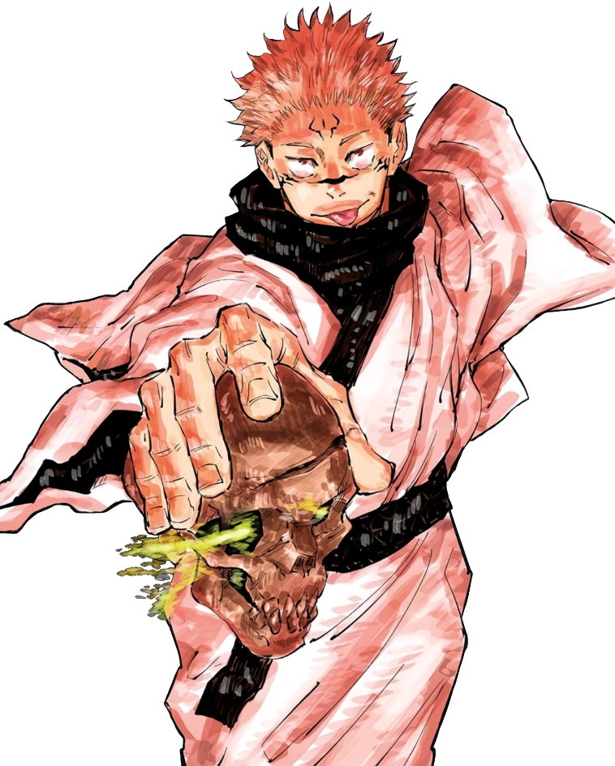
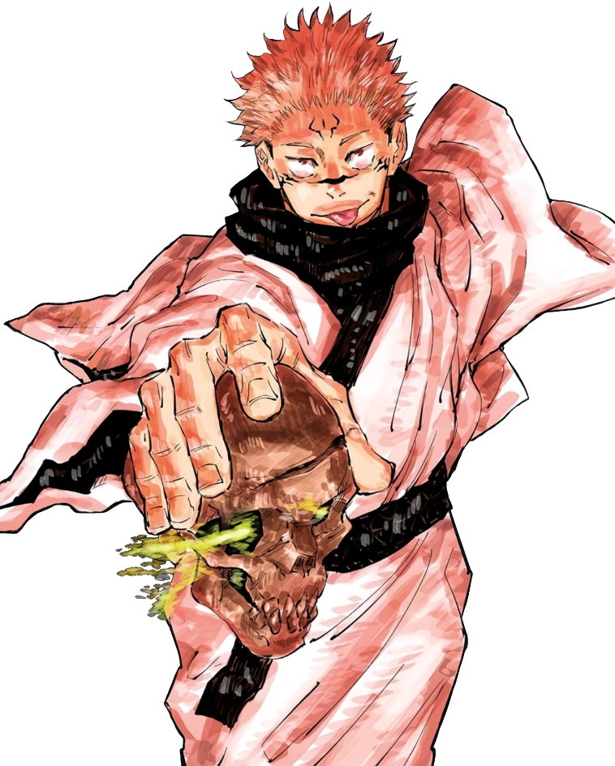
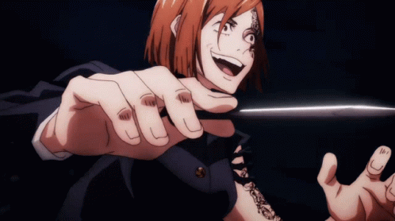
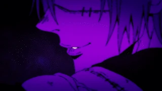
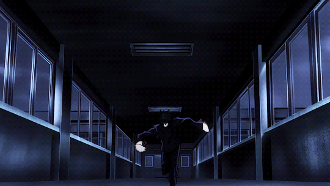
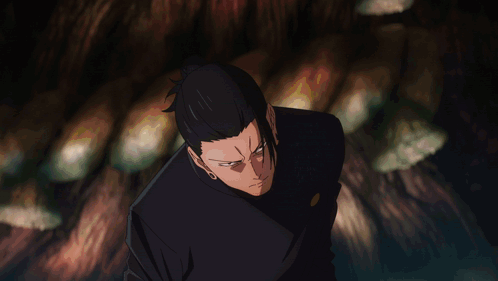
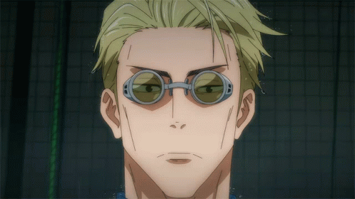
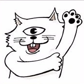
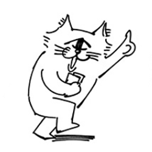
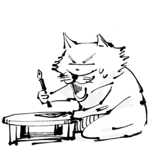

↓ ↓ ↓
Jujutsu Kaisen
Plot
TEST
The story of Jujutsu Kaisen is set in a world where Cursed Spirits feed on unsuspecting humans and fragments of the legendary and feared demon Ryomen Sukuna have been lost and scattered about.
Should any curse consume Sukuna's body parts, the power they gain could destroy the world as we know it. Fortunately, there exists a mysterious school of Jujutsu Sorcerers who exist to protect the precarious existence of the living from the supernatural!
Yuji Itadori is an expert at track and field. But he has zero interest running around in circles, he's happy as a clam in the Occult Research Club. Although he's only in the club for kicks, things get serious when a real spirit shows up at school!
When his grandfather is on his deathbed, Yuji makes a promise to him; that he will do kind deeds so that he dies surrounded by loved ones, unlike his grandfather.
However, Yuji's life takes a sudden turn as he meets Megumi Fushiguro; a jujutsu sorcerer who tries to retrieve a cursed object. When Yuji's friends open the cursed object that they found, things go south as the cursed spirits that it spawned start roaming in school. As Fushiguro and Yuji are almost defeated by one of the spirits, Yuji then swallows the cursed object and gains its power. As a result, Yuji becomes cursed by the object and gets dragged into Fushiguro's thrilling world of jujutsu sorcerers and cursed spirits.
Main Characters


 

- Itadori Yuji
- Fushiguro Megumi
- Kugisaki Nobara
- Gojo Satoru
- Sukuna
Cursed Technique
Cursed Techniques (術じゅつ式しき Jutsushiki) are abilities fueled by cursed energy. Different types include innate techniques, barrier techniques, shikigami, new shadow style, and more.
Technique Activation
A cursed technique is activated through the act of pouring cursed energy into it, utilising one of two processes; Lapse or Reversal. If cursed energy is comparable to electricity, cursed techniques are the appliances that use that power to function. Cursed energy is processed through a procedure akin to a mathematic formula within the user to activate a cursed technique.
My Top 5 fav Cursed Techniques
5. Mahito's Idle Transfiguration
4. Fushiguro Megumi's Ten Shadow Technique
3. Geto Suguru's Cursed Spirit Manipulation
2. Nanami Kento's Ratio
1. Gojo Satoru's Limitless

Author
Akutami Gege (born February 26, 1996) is a Japanese manga artist and the author of Jujutsu Kaisen.
Akutami Gege is a pen name and the author's real name is unknown. He uses an image of a one eyed cat.
Akutami Gege's Persona
  
In 2018, Gege Akutami started their first full serialization with Jujutsu Kaisen in issue 14 of Weekly Shonen Jump. Jujutsu Kaisen serves as the follow-up series to Jujutsu Kaisen 0: Jujutsu High.